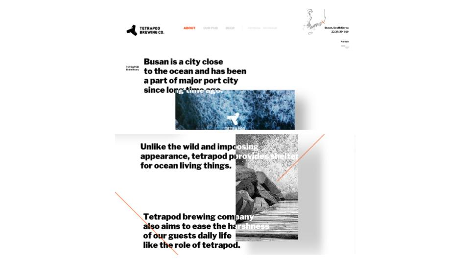
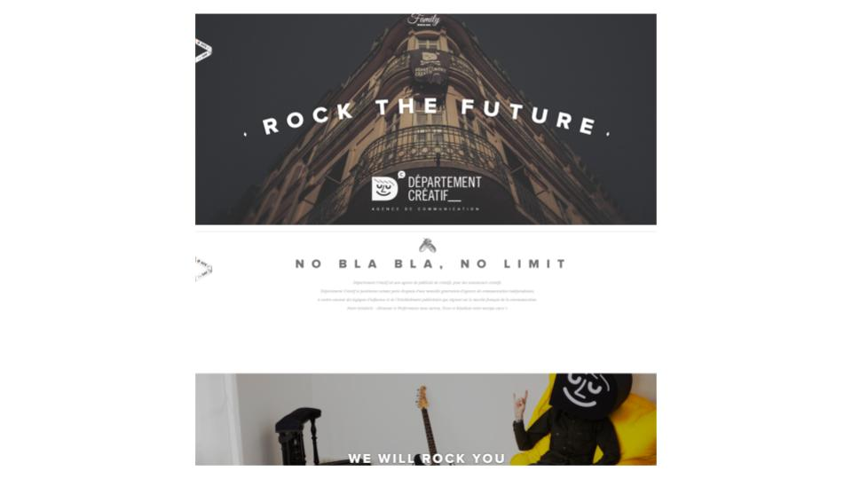
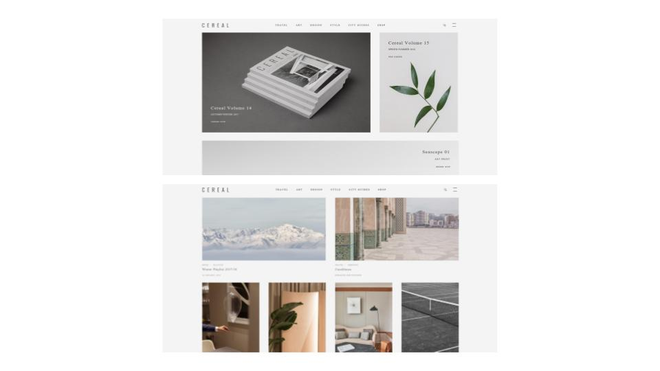
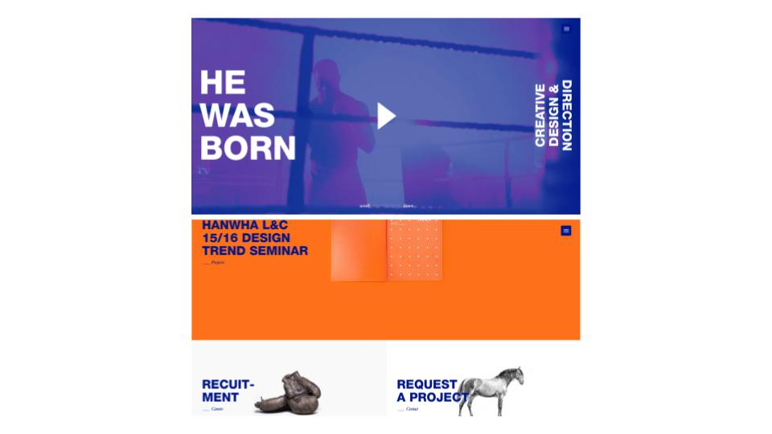
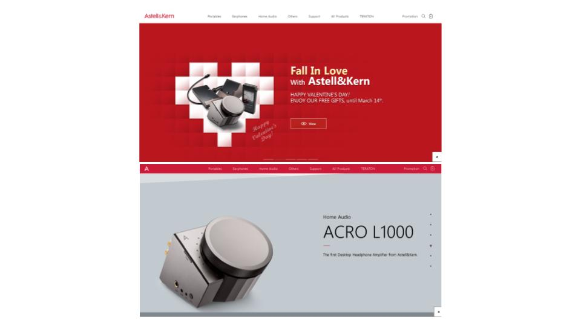

ONE SCROLL PAGE
Tetrapod brewing co

테트라포드라는 항만 외곽에 쌓아두어 파도로부터 항내를 보호하는 역할을 하는
네 개의 뿔 모양의 콘크리트 구조물을 소개하는
‘테트라포드 브루잉 컴퍼니’ 사이트.
글자와 이미지가 따로 되어있지 않고, 마치 원래 하나의 작품인 것 처럼 어우러져 있는 방식이다.
오른쪽 위의 번역 버튼을 누르면 해당 글자 옆에 번역창이 뜨는 것도 하나의 특징이다.
Departement creatif

프랑스 광고 대행사 사이트 ‘Departement creatif’
소개하고자 하는 회사의 관련된 설명과 로고를 먼저
보여준 후, 이미지를 보여주는 방식이다.
Cereal

영국 브리스톨 지역을 베이스로, 여행과 음식, 책 등의
이야기를 담고있는 감성 잡지 회사 ‘Cereal’의 사이트.
이미지의 그리드를 정확하게 맞추면서도 그 이미지가
가진 분위기를 통일시켜,
사이트 전체적인 분위기를
구성하는 모던한 느낌의 방식이다.
He was born

디지털 기반의 다양한 분야에서 활동하는 서울에 위치한 크리에이티브 디자인 스튜디오 ‘히워즈본’의 사이트.
하나의 게시글을 여러가지 컬러로 구분하여 배치했다.
컬러에 맞게 글자의 색 또한 변화를 주어, 서로 다른 작품임을
확실하게 구분지어 보여준다.
Astell & Kern

아이리버의 포터블 MQS 플레이어 브랜드인
‘아스텔앤컨’의 사이트.
보여주고자 하는 제품과 이름을 크게 배치하고 그 외의
자잘한 설명을 최대한 자제한 심플한 방식이다.
제가 다녀온 전시회에 관련해 설명하는 내용을 담을 생각입니다.
전체적으로 이미지와 폰트가 적절하게 겹치거나 안에 있으면서 타이틀같은 이미지를 사용하는 것 외에도
그리드에 맞게 부가적인 내용을 넣으면서 이미지부터 임팩트있고 줄거리를 알려주는 느낌의 사이트를 만들고 싶습니다.
2016286028 서재현